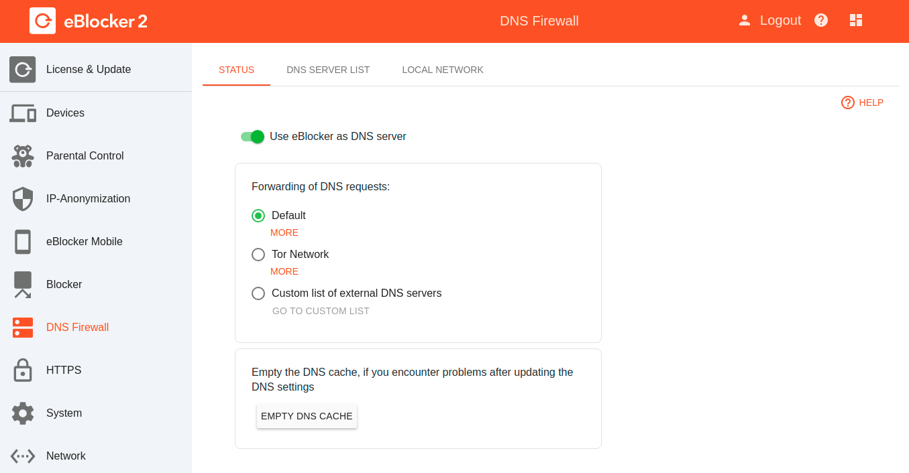

Deutsch | English
eBlocker Help > Knowledge Base > Use cases
If you enable this feature, you can use your eBlocker to distribute DNS requests to a list of different DNS servers, or to have them resolved over the Tor network. There are three different options available to you.

Default
The setting of your local network is used here. The DNS server entered in your router is used.
Tor Network
The DNS requests are routed through the Tor network and passed to a DNS server at the starting point of the Tor network.
This feature can slow down Internet access a little. This is also true for devices that are otherwise not routed through the Tor network.
Custom list of external DNS servers
With this option you can store a list of DNS servers. This list can then be processed by the eBlocker in order of availability or in random order.
We have listed a small number of DNS servers for you here https://www.eblocker.com/en/dns-server-list/
You can find other publicly available DNS servers on the Internet. Enter the terms "Public name servers" or "Alternative DNS servers" in the search engine.
Please also note our FAQ's.